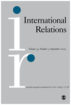

收录于合集
作品简介
** 【作者】**
Karin Aggestam： 隆德大学（Lund University）政治学教授，昆士兰大学（University of Queensland）名誉教授。跨学科研究兴趣集中在和平外交、冲突分析、性别包容、谈判/调解、外交政策和巴以冲突。
Annica Kronsell： 哥德堡大学政治学教授（University of Gothenburg）。实证研究兴趣是斯堪的纳维亚和欧洲背景下的气候和可持续发展治理。理论研究兴趣是治理和制度理论、女性主义等。
Annika Bergman Rosamond： 隆德大学（Lund University）政治学高级讲师。研究兴趣包括女性主义、英国学派、国际政治中的伦理争论和安全等。
【编译】 李玉婷（国政学人编译员，中国人民大学国际关系学院）
【校对】 赵雷
【审校】 王泽尘
【排版】 马璐
【来源】 Aggestam, K., Bergman Rosamond, A., & Kronsell, A. (2019). Theorising feminist foreign policy. International Relations, 33 (1), 23–39.
期刊介绍

《国际关系》（International Relations），是国际关系领域的顶尖期刊之一，由SAGE出版社与大卫·戴维斯纪念研究所(David Davies Memorial Institute)联合出版编辑。
** ** 女性主义外交政策的理论化****
Theorising feminist foreign policy
<img src=’/images/2990/5.jpeg’ width=‘100%’ />
Karin Aggestam；
Annica Kronsell；
Annika Bergman Rosamond
内容提要
越来越多的国家的外交和安全政策受到了女性主义的影响。本文基于理性主义视角，从道德外交政策、女性主义国际关系理论和关怀伦理学出发，将这些新兴的外交政策实践和话语模式的理论化。本研究的关键论点是，女性主义的外交政策本身就具有道德性，因为它重点关注性别歧视、不平等、暴力以及妇女和其他边缘化群体缺少被包容和缺乏代表性等问题。
文章导读
一、国际道德外交政策
古典现实主义认为国家行为的出发点是自助、生存、安全和以权力界定的最大化的国家利益。新现实主义更加强调国际政治结构，认为国际政治的无政府状态的逻辑和权力分布限制了行为体的自由和选择。
在学术光谱的另一端，针对国际道德的批判大多集中在“一国对自身以及他国的义务”上。社群主义者倾向于认为国家的道德和团结等精神是由其族人共同构建，并受此限制。而世界主义者则不区分内部和外部，并假设相同的道德适用于所有范围。然而，目前并没有案例支持世界主义的道德学说。事实上， 国家会考虑到他国从而调整自己的国家利益和安全需求 ，女性主义外交政策正是其中的一个案例。
对女性主义外交政策的研究可以通过揭露国际层面上的不公正和争取性别公正的斗争，丰富国际伦理学的研究。 这包括分析赋予女性权力和保护、减少性别不平等和暴力，以及揭露其他边缘化群体的经历和故事。这些领域在道德外交政策研究中通常没有得到太多关注，尽管它们是女性主义国际关系理论的核心关注点。女性主义外交政策要求对新的时间、行动者、政策和道德框架的研究具有敏感性。
关于道德意义上的外交政策实践和话语的假设仍然是有争议的。对此，有一系列关于国际伦理的学术研究试图在实践和理论上提高对外交政策和良好国际公民身份的道德基础的理解。
作者认为，道德外交政策的实施建立在致力于通过追求 良好国际公民身份 来改变全球政治的基础上，这需要对外交政策实践中“他人”的需求敏感。但已有关于道德外交政策的研究忽视了性别平等。相反地，女性主义将性别平等、歧视和暴力置于外交政策行为和话语分析的中心。Jacqui True认为女性主义理论“尚未被转化为国家和非国家行为者在国际关系中的道德行为准则”，因为传统的以国家为中心的体制框架被置于父权制和压迫性的权力结构之中。（女性主义的外交政策）从根本上挑战深刻的父权制结构和性别偏见可能会遇到极大阻力。
性别二元论和全球政治中的权力分布使得公民社会和跨国主义成为道德变革的关键。在这方面， 女性主义国际关系理论关注全球不公正的伦理转变，倡导关于非国家行为者、跨国力量和个人的研究 。女性主义国关理论对政治精英和民间大众二者间的联系做了大量的研究，为女性主义外交政策变革提供一个规范性的框架，以解释各国如何通过与社会运动和公民社会的密切合作来加强性别平等。
在女性主义外交政策中，作者认为应采取更为严格的道德衡量体系，以此评估国家的国际行为倾向、身份以及与性别相关的具体政策。事实上，衡量体系中的这些道德规范正是女性主义外交政策行为的核心。
推行女性主义外交政策的国家倾向于从联合国 WPS （ women, peace and security ）议程中获得道德支持，而这些国家也通过其外交政策和实践表示出对 WPS 议程的道德承诺。 作者认为，这样的承诺标志着各国开始偏离传统的、以精英为导向的外交政策实践和分析，变得更具有包容性。但WPS议程并没有详尽阐述女性主义外交政策的要求，它的内容、框架、和含义受到了女性主义学者的实质性批评。例如Laura Shepherd指出，WPS议程本身就是性别化的。
最后，需要强调的是， 外交政策的实践面临着各种政治选择和妥协，而这有时候可能会与女性主义外交政策所重视的道德原则发生冲突。 如瑞典虽然致力于推行女性主义外交政策，但其大量的武器出口记录并不符合前者的道德原则。
二、女性主义国际关系理论
女性主义国际关系理论是研究外交政策的关键， 它批判全球秩序中的不平等，并挑战其中的权力等级、特权和性别制度。 单一的二元法对保护者和受保护者的划分影响了人们对现行国际政治的理解，女性主义考虑女性在全球事务中的经验，开拓性别二元论建构全球伦理责任的新思路。
女性主义国际关系理论也批判了以国家为中心的理论。 在制度化的父权秩序下，女性缺少在公共领域里的（活动）空间。因此，女性主义的假设是需要公民社会参与国内外事务，以解放国内外的女性和男性。对女性主义外交政策道德的批判性考察可以对这种共同构成关系进行更深入的分析。
代表性和包容性是女性主义的重要特征之一 ，然而在外交领域，女性任职人数仍然极低。自第1325号联合国安理会通过以来，一些国家在外交政策中纳入女性主义和支持性别（平等）的规范，倡导性别公正的包容和更多样化的代表性。例如，瑞典政府明确将代表权作为其外交政策的三大支柱之一（另外两个是权利和资源）。因此研究女性主义外交政策框架需要考虑其强调的代表性和包容性，尤其是它们对在和平谈判中女性存在的影响和更公平的权力分配中的作用。
制定女性主义外交政策的研究框架，意味着承认包括阶级和种族在内的社会因素与性别相互作用而产生的交叉性别学科问
三、关怀伦理学
女性主义外交和安全政策的中心是对自身政治社区外的他人保有关心和鼓励的承诺。
关怀伦理学认为母亲与孩子的独特关系使得母亲拥有了可以超越直系家庭和国家的关怀和鼓励的技能。Sara Ruddick等人认为，母性与关怀可以带来和平，但Ruddick也坚持认为母性并不仅仅局限于女性。关怀伦理学有利于解决全球性别不平等、暴力和跨境保护问题。但关怀伦理学缺少对女性这一群体的本质化的研究，因此不适用于全球性别政治。
Fiona Robinson认为正统的关怀伦理学在某些方面是狭隘的，比如其理论中的本质私人领域的“女性道德”。 关怀伦理学不是局限于家庭里女性的作用，而是超越了个人，延伸到政治，甚至是全球范围内的社会生活。 与其观点一致，作者认为强调 对话和关怀 是女性主义外交政策的一个重要方面。女性主义的伦理基础与新型关怀伦理学的规范性要求一致，认为“强者有责任研究如何处理道德问题，思考现有的社会和个人关系是如何以及为什么会导致排斥和边缘化问题”。
传统的外交政策并未考虑国家在不同文化、政治和道德环境中的区别，也从未考虑国各国公民的主观性和道德偏好。关怀伦理学则对这些因素十分敏感，将关怀伦理学纳入女性主义外交政策，有利于考虑到个体因素，特别是传统外交政策和国际关系中被忽视的女性声音。
此外，传统的外交实践和理论倾向于忽视女性和殖民地，纳入关怀伦理学的女性主义外交政策则考虑女性和殖民地的情况，并主动寻求解释道德问题。 倾听边缘化的声音和同情原则是外交政策实践过程的关键。
四、结 论
越来越多的国家将女性主义和性别规范纳入外交政策的考虑范围。作者认为有必要建立一个基于国际道德、女性主义国际关系理论和关怀伦理学的理论框架。首先，这一原创性的框架有利于更好地理解道德外交政策的实施。其次，这一框架分析了如何将女性主义国际关系理论和关怀伦理学有效地应用于其他相关外交政策的研究。第三，该框架（运用到实践中）可以产生经验知识，有利于制定和完善女性主义外交政策。比如采用交叉敏感方法可以更好地理解外交政策过程中存在的性别逻辑和交叉权力问题。此外，该框架可以作为一个规范性的尺度，批判性地评估一个国家声称的女性主义外交政策的结果。
_ ** _ ** _ ** _ 本文由国政学人独家编译推荐**__
扫下方二维码查看往期精彩
【新刊速递】第01期 | Review of International Studies Vol.45, No.4, 2019
【新刊速递】第02期 | International Relations Vol.33, No.3, 2019
添加 国小政 微信跟踪学习

点“在看”给我一朵小黄花